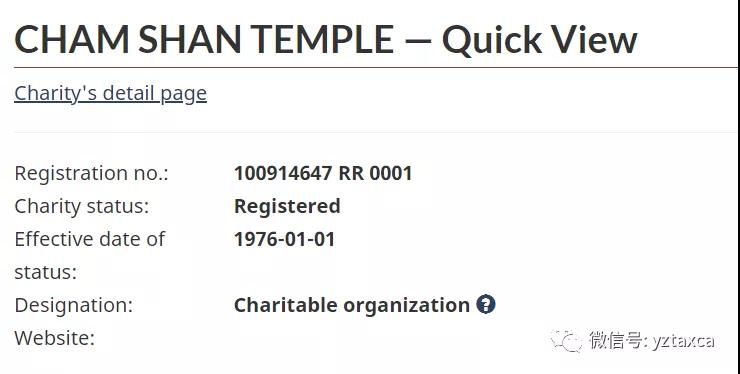

为什么高收入的人群热衷慈善捐款

近期在朋友圈看到某位杰出的房产经纪，向North York General Foundation又捐款了一万刀。首选，在疫情期间，我们应该大力赞扬这种奉献精神。其次，本人在税务角度分析，为什么高收入的人群会热衷做大额的慈善捐款。
1：应该向谁捐献？
被税务局认证的not for profit 慈善机构 ，link见: https://apps.cra-arc.gc.ca/ebci/hacc/srch/pub/dsplyBscSrch
比如说在多伦多的华人都知道的 湛山精舍就是之一。

2：可以捐什么？一定要捐钱吗？
可以捐钱也可以捐物。
要注意一定要让慈善机构出具上图的donation receipt。
捐物的情况也很多，比如我们在审计旺市一家慈善机构的时候就发现，每年这个机构都会收取大量的物品（比如棒球票篮球票）。
如果是捐物，慈善机构会出具 donation in kind receipt， 用物品的fair market value作为donation receipt的value（如何确定市场价值的话题，我不再这里赘述）。
在个人报税的时候，会计师一定是需要看到issued的donation receipt，然后再claim相应的tax credit。
3.捐款的税务政策到底是什么？
1）捐款需要在一个自然年内发生。比如说2020年需要claim tax credit，捐款就必须要在2020年1月1日到12月31日之间捐出；
2) 捐款的tax credit最多是收入(net income）的75%；
联邦税
3）捐款的前200刀，tax credit是15%；
4）捐款的200刀之后的tax credit: a) 如果纳税人的收入，超过了202,800的部分，那么捐款的tax credit是33%。
b) 如果纳税人的收入，没有超过22,800的部分， 或者在a）中已经算过了，那么捐款的tax credit是29%;
省税(以安省为例）
5)捐款的前200刀，tax credit是5.05%, 6)捐款的200刀之后的tax credit，是11.16%, 参考网站 https://www.canada.ca/en/revenue-agency/services/charities-giving/giving-charity-information-donors/claiming-charitable-tax-credits/charitable-donation-tax-credit-rates.html
7）没有在当年用掉的捐款可以递延最多五年；
8）以夫妻任何一方的名义捐款，都可以用于收入高的一方。比如太太的名义捐款，先生的收入高，太太的捐款可以用于先生的抵税。
小明在2020年的收入是222,800，2020年期间，捐款25,200给认证的慈善机构，那么小明能获得的tax credit是多少呢？(小明获取了相应的donation receipt)
1）联邦税：
1)捐款的前200按照15%的税率计算。200*15%=30;
2)小明的收入超过202,800的部分是两万，那么这部分的tax credit是20000*33%=6,600;
3)还剩下的5000捐款，这部分的tax credit是 5000 * 29% = 1,450;
联邦层次的税务优惠合计 30 + 6600 + 1450 = 8080
2）省税:
我们以安省为例：
1) 捐款的前200刀按照5.05%的税率计算。200*5.05%=10.10;
2) 捐款超过200刀的部分，按照11.16%。 25000*11.16% = 2790;
安省层次的税务优惠合计 10.10 + 2790 = 2800.10;
合计捐款的税务优惠： 8,080 +2,800.10 = 10,880.10，占捐款25,200的43.18%!